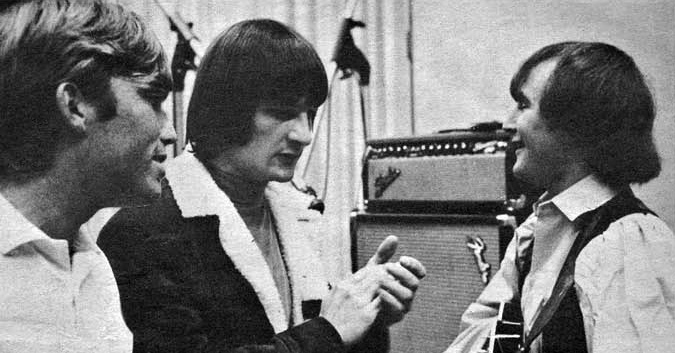

Turn! Turn! Turn! by The Byrds came out on October 1, 1965, and reached No. 1 in America on December 4.
Its words are almost all from the Book of Ecclesiastes, set to music by Pete Seeger.
The Byrds gave that old text a ringing twelve-string and a steady rock beat.

Table of Contents
- Who Wrote Turn! Turn! Turn!?
- McGuinn's First Arrangement
- Seventy-Eight Takes in September
- Release and Chart Run
- A Song for a Year of War
- FAQ
Who Wrote Turn! Turn! Turn!?
Pete Seeger wrote the music and took the words from the third chapter of Ecclesiastes, in the King James Bible.
Most sources date it to 1959, though Seeger later said 1954.
In the book Songwriters on Songwriting, he recalled a letter from his publisher: "Pete, I can't sell these protest songs you write."
Seeger pulled out a slip of paper with the verses on it and improvised a melody in about fifteen minutes.
Six Words of His Own
Seeger reordered the scripture but changed very little of it.
By his own count, he added six words, plus one word sung three times: "turn."
The last of those added words turn the ancient list into a plea for peace.
McGuinn's First Arrangement
The Limeliters released it first, in 1962, as "To Everything There Is a Season."
Jim McGuinn, later Roger, played behind the Limeliters in his folk years.
He then arranged the song for Judy Collins and played guitar on her recording for Judy Collins 3.
Her version carried the new title, Turn! Turn! Turn! (To Everything There Is a Season).
The idea of reviving it came back to McGuinn on a Midwest tour in July 1965.
The Byrds had just ridden Mr. Tambourine Man to No. 1 in America and Britain.
The Library of Congress notes they cut this song "rather than release another Bob Dylan cover."
Seventy-Eight Takes in September
Producer Terry Melcher ran the sessions at Columbia's Hollywood studio on September 1 and 10, then September 14 to 16.
The master reportedly took 78 takes across five days.
This time the whole band played, unlike on their first hit:
- Jim McGuinn: twelve-string lead guitar and lead vocal
- Gene Clark: tambourine and harmony vocal
- David Crosby: rhythm guitar and harmony vocal
- Chris Hillman: electric bass
- Michael Clarke: drums
McGuinn said, "I came out with that samba beat, and we thought it would make a good single."
Seeger loved the result, saying the "clanging, steel guitars" sounded "like bells."
Release and Chart Run
Columbia issued the single on October 1, with Gene Clark's "She Don't Care About Time" on the B-side.
| Chart | Peak |
|---|---|
| Billboard Hot 100 (US) | 1 (3 weeks) |
| Cash Box Top 100 (US) | 1 |
| New Zealand | 1 |
| Canada (RPM) | 3 |
| Germany | 8 |
| Netherlands | 15 |
| UK Singles Chart | 26 |
It replaced the Supremes' "I Hear a Symphony" at the top and held No. 1 through December 18.
The Dave Clark Five's "Over and Over" knocked it off on Christmas week.
Britain was cooler, and Official Charts shows an eight-week run that peaked at No. 26.
The album Turn! Turn! Turn! followed on December 6, two days after the single hit the top.
It also carried a cover of Dylan's The Times They Are a-Changin'.
For the rest of that winter's hits, see our 1965 music guide.
A Song for a Year of War
Critic William Ruhlmann argued that its plea for peace reached buyers as the Vietnam War escalated.
Stereogum's Tom Breihan adds that the Bible text gave the band plausible deniability.
David Crosby remembered a letter from Seeger, blacklisted in the 1950s.
"They used to do everything but burn crosses on my lawn for being a communist," Seeger wrote, and now people wanted his autograph.
It was the Byrds' last Hot 100 No. 1.
Gene Clark left early in 1966, as our Byrds biography explains.
Honors and Later Life
- Grammy Hall of Fame, 2001
- Library of Congress National Recording Registry, class of 2026
- Forrest Gump, as Jenny leaves for Berkeley
- Judy Collins's version, reissued in 1969, reached No. 69 on the Hot 100
FAQ
What Bible verse is Turn Turn Turn from?
Ecclesiastes 3, verses 1 to 8, in the King James Version.
Seeger rearranged the lines and added the refrain and a closing plea for peace.
Who originally sang Turn Turn Turn?
The Limeliters released it first, in 1962, as "To Everything There Is a Season."
Pete Seeger's own recording followed a few months later.
Who sings lead on the Byrds' version?
Jim McGuinn, later Roger, sang lead and played the twelve-string.
Gene Clark and David Crosby sang the harmonies.
What movie is Turn Turn Turn in?
Forrest Gump is the best-known one.
The Byrds' record plays as Jenny leaves Forrest for Berkeley.
Was Turn Turn Turn a protest song?
Not on its face, since nearly every word is scripture.
But Seeger's closing line asks for peace, and in late 1965 listeners heard it against the Vietnam War.
Our folk rock guide traces the sound it helped build, and the Billboard chart archive lists every Byrds hit.
Play the opening chime once more and hear why Turn! Turn! Turn! still sounds like a prayer with a backbeat.